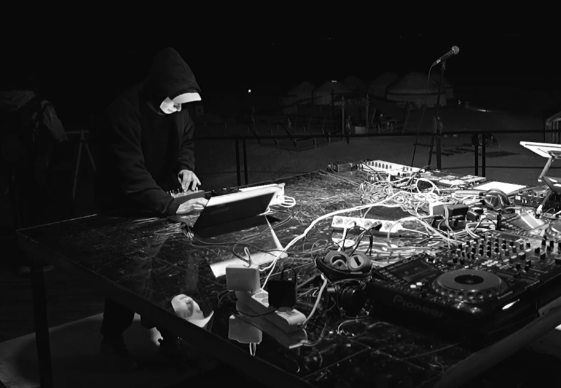

VLADISLAV GENERALOV
klad mineralov @ ŞUAQ festival (31.08.2025 / Charyn Canyon, SURFACE stage)
2025

klad mineralov's live performance on the first episode of ŞUAQ Festival in 2025.
ŞUAQ took place in Charyn Canyon National Park, about 200 km east of Almaty.
On the SURFACE stage I performed a live set combining percussive polyrhythms, bird sounds and electroacoustic games with Charyn stones.
Performed August 31, 2025. Charyn Canyon National Park, Kazakhstan